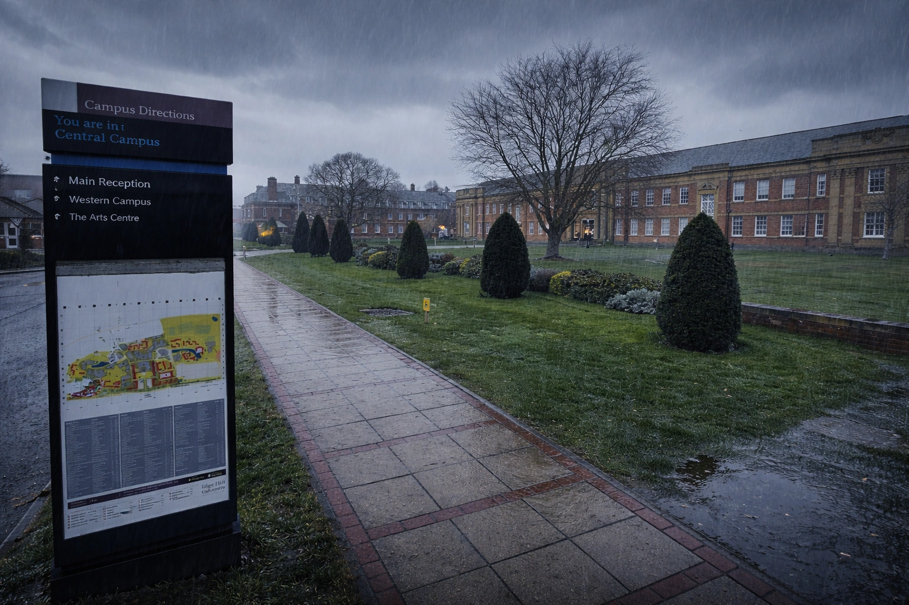

Edge Hill University and Predecessors (1880-2019)
| Reference number | EHU |
|---|---|
| Level of description | Collection |
| Date(s) | 1880 - 2019 |
| Format | 91 linear metres |
| Administrative history |
This collection brings together records created by Edge Hill
staff, students, alumni and other associated stakeholders. It
is a collection that continues to evolve and grow as further
records are generated and added and additional historic
records are donated and catalogued.
It should be noted that there is a backlog of records waiting to be catalogued, so researchers are encouraged to contact the archive if they cannot see something they might have expected to be included in the catalogue. |
| Conditions governing access |
Some of the items in this catalogue are currently closed in
line with data protection legislation. Please contact the
archive for more information about specific items.
Further information about accessing the collection is available here: https://archives.edgehill.ac.uk/about |
| Access status | Open |
| Conditions governing reproduction | Copyright restrictions apply |
| Name | Yelf, Sarah; Butterworth, Elsie Mary; Bain, Margaret; Webster, Harry; Stanton, Marjorie W.; Gee, Ruth; Smith, Eva Marie; Millins, Ken; Hale, Sarah Jane |
Description
This is a collection of records created as part of the activities of Edge Hill University staff, students and associates, including under the various predecessor names of the institution.
Edge Hill College opened on Durning Road in the Edge Hill district of Liverpool in January 1885 as the first non-denominational teacher training college for women, with 41 students. Sarah Jane Yelf was appointed as the College’s first Principal, with the intention of producing ‘a superior class of Elementary School Mistresses’. Sarah Jane Hale took over as principal in 1890, just as the College began to grow. By 1905, student numbers had risen to 160. Miss Hale died in 1920 and by the end of her tenure, the College had come a long way. It had trained 2,071 girls, of whom 213 were Head Mistresses, 178 First Assistants, and 30 science mistresses. Miss Hale’s successor in 1920 was Eva Marie Smith.
In 1925, Edge Hill was placed under the control of Lancashire County Council who would provide a new building for the college, preserving the original name, history and reputation. A site in Ormskirk was chosen and the foundation stone of the new building was laid in 1931. It was officially opened by Lord Irwin, President of the Board of Education, on 2 October 1933.
During the Second World War, the College was evacuated to Bingley Training College while the campus served as a military hospital. The original Durning Road premises were destroyed in a German bombing raid on 28 November 1940, killing 166 people.
Miss Smith retired in 1941, to be replaced by Miss Elsie Mary Butterworth as Principal for the duration of the war, who was in turn replaced in 1947, following the return to Ormskirk, by Dr Margaret Bain.
Edge Hill College had its first intake of male students in 1959 and three year Teacher Training courses were introduced in 1960.
The College’s first male Principal, P.K.C. (Ken) Millins, succeeded Dr Bain in 1964 and male staff numbers grew from 3 in 1959 to 37 in 1963. In 1975, the college introduced new degrees in English, Geography and Applied Social Sciences, supplemented shortly afterwards by History and Combined Social Studies.
In 1978, Millins resigned and was replaced by the Assistant Principal Marjorie Stanton, who battled against the plans of the Local Education Authority to merge Edge Hill with Lancashire Polytechnic (now the University of Central Lancashire).
On Stanton’s retirement in 1982, Harry Webster took up the post of Principal, followed in 1989 by Ruth Gee.
Gee initiated a range of curriculum developments, with new undergraduate degrees in Field Biology and Habitat Management, Communication and Media, and Organisation and Management Studies. Initial Teacher Training in a range of Secondary Year subjects was introduced and within a few years Edge Hill would become one of the largest national providers in this area.
In 1993, Dr John Cater took over as Principal and Chief Executive. He led the acceleration of the process of curriculum, infrastructure and institutional development which has continued to the present day.
The title of Edge Hill University College was adopted in 1996, along with a new corporate identity. Taught Degree-Awarding Powers (TDAP) and University Title were awarded in 2006 and then, in 2008, the University gained Research Degree Awarding Powers. Dr (later Professor) Tanya Byron was appointed as the first Chancellor of the University. In 2014/15, Edge Hill University was awarded the coveted UK University of the Year title by Times Higher Education and, more recently, was crowned Modern University of the Year in the The Times and Sunday Times Good University Guide 2022. In 2023, Sport and media executive Dawn Airey was announced as the University's new Chancellor.
Dr Cater retired as Vice Chancellor in January 2025. His successor, Professor Michael Young, held the position from June 2025 until February 2026.
Content Warning: As historical resources, the nature of the items and the catalogue descriptions in this collection reflect the language and thinking of the era in which it was created, and some items include language and imagery which is offensive, oppressive and may cause upset. These ideas are not condoned by Edge Hill University, but we are committed to providing access to this material as evidence of the inequalities and attitudes of the time period.